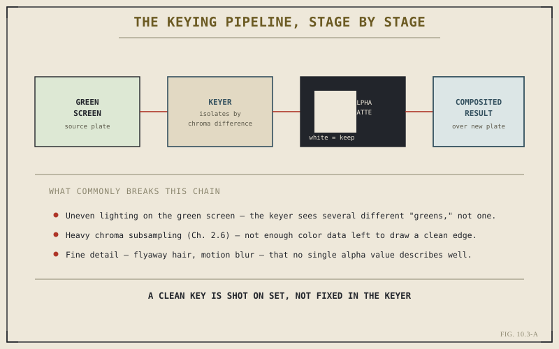

Keying is the single most common reason an editor ever opens the Fusion page at all. A subject shot against green or blue needs to be isolated from that background and merged into something else entirely — a virtual set, a different location, a simple solid color for a graphic. Chapter 10.2 gave you the Merge node as the tool that does the actual combining. This chapter covers the other half of the job: producing a clean, usable matte to feed into it in the first place.
What a Key Actually Produces
Keying isolates a subject by analyzing color difference — specifically, the difference between a known, uniform background color and everything that isn't that color. The output isn't a cutout image in the way scissors would produce one; it's an alpha channel, a per-pixel value describing how transparent or opaque that pixel should be in the final composite. Fully opaque where the subject clearly is, fully transparent where the green screen clearly was, and — critically, and where most of the real skill in keying actually lives — some carefully graduated value everywhere in between, along edges, in fine hair, in slightly translucent material.

A clean key is shot on set, not fixed in the keyer.
The Keyer Node and Its Basic Controls
Fusion's keying tools work by sampling the specific green or blue in a shot and building a matte from how far each pixel departs from that sampled color. In practice, this means picking a representative sample of the screen color, then refining the result against the two things every key eventually needs adjusting for: how aggressively the edge between subject and background is drawn, and how much residual color — green light bouncing off the subject's edges, commonly called spill — needs to be suppressed so it doesn't tint the final composite an unnatural color where the two elements meet.
Why Footage Quality Decides More Than the Tool Does
Chapter 2.6 already flagged this directly, in a forward reference written specifically for this moment: chroma subsampling — how much color detail a codec actually stores relative to brightness detail — has a direct, practical effect on keying quality. Footage recorded at 4:2:0 simply has less color information available at each pixel than 4:2:2 or 4:4:4 footage, which means the keyer has less precise data to draw a clean edge from, regardless of how carefully its controls are adjusted. The same is true of lighting: a green screen lit unevenly presents the keyer with several different shades of "green" rather than one, and no amount of keyer refinement fully substitutes for a screen that was lit flat and evenly in the first place.
A keyer can only work with the color information a shot actually gives it. Uneven lighting and heavy chroma subsampling both remove that information before the keyer ever sees the footage — no amount of node-based refinement puts it back.
Refining a Key Beyond the First Pass
A first pass with a keyer rarely produces a finished matte on its own, even on well-shot footage. Garbage mattes — simple shapes drawn to exclude anything outside the subject's rough silhouette, like stray lighting rigs or the edges of the screen itself — remove problems the color-based key alone can't distinguish from the subject. Edge softening and light matte erosion clean up ragged boundaries. Spill suppression, applied as its own step after the initial key, handles the residual color problem directly rather than hoping the keyer's base settings solved it already. None of this is exotic; it's the expected, standard sequence of refinement most real keying work goes through before a matte is genuinely composite-ready.
Common Failure Points Worth Recognizing
A few problems recur often enough to be worth naming directly, because recognizing them quickly saves real time. Fine, detailed edges — flyaway hair, motion-blurred limbs — rarely key cleanly with a single hard-edged matte, since no one alpha value describes a strand of hair half in front of and half behind the background color. Reflective or translucent material behaves similarly, picking up background color in ways a simple key doesn't anticipate. None of these are reasons to avoid keying; they're reasons to expect refinement as a normal part of the process rather than a sign that something went wrong.
With a subject cleanly isolated, the next problem is making it move convincingly with the shot around it — or holding a shaky shot steady enough for a composited element to sit believably inside it at all. Chapter 10.4 covers exactly that: tracking and stabilization, the tools that handle motion once keying has handled isolation.
Key Concepts to Remember
- A key produces an alpha channel — graduated transparency values, not a hard cutout — with most of the real skill living in the edges.
- Chroma subsampling and lighting evenness (Chapter 2.6) limit key quality before the keyer's own controls come into play at all.
- Garbage mattes, edge refinement, and spill suppression are the expected next steps after a first keyer pass, not signs of a failed key.
- Fine detail and translucent material resist single-pass keying by nature — expect refinement rather than treating it as unusual.
Cross-References Forward
| → Ch. 10.4 | Tracking and Stabilization — handles motion once keying has handled isolating the subject from its original background. |
| → Ch. 10.2 | Revisit the Merge node this chapter's finished mattes ultimately feed into. |
| → Ch. 2.6 | Revisit chroma subsampling and codec choice, the footage-level factors that decide how far this chapter's tools can actually go. |